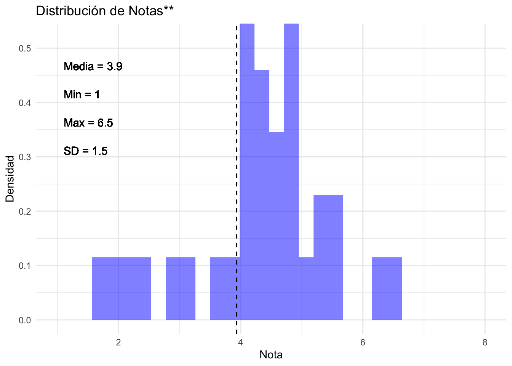

| Rut | nota_tareas | promedio_pruebas | nota_examen | Nota Final | P(Nota Final < tunota) |
|---|---|---|---|---|---|
| 21805638-5 | 7.0 | 4.2 | 5.4 | 5.4 | 0.59 |
| 21701909-5 | 7.0 | 5.3 | 4.8 | 5.7 | 0.74 |
| 21575827-3 | 6.5 | 5.2 | 3.3 | 5.0 | 0.41 |
| 21551561-3 | 6.6 | 7.0 | 5.0 | 6.3 | 0.85 |
| 19246028-K | 3.9 | 3.8 | 3.4 | 3.7 | 0.15 |
| 21725304-7 | 6.9 | 4.3 | 5.6 | 5.4 | 0.67 |
| 21543296-3 | 6.0 | 4.1 | 5.9 | 5.2 | 0.52 |
| 21803109-9 | 6.9 | 6.1 | 6.3 | 6.4 | 0.96 |
| 20591970-8 | 4.1 | 2.4 | 1.7 | 2.7 | 0.07 |
| 20965392-3 | 6.9 | 3.0 | 4.4 | 4.6 | 0.26 |
| 21750628-K | 5.0 | 3.1 | 3.2 | 3.7 | 0.19 |
| 21530251-2 | 5.8 | 3.2 | 4.3 | 4.3 | 0.22 |
| 21816972-4 | 5.5 | 6.0 | 6.6 | 6.0 | 0.78 |
| 21445742-3 | 6.7 | 6.3 | 5.5 | 6.2 | 0.81 |
| 21331548-K | 5.5 | 5.0 | 4.6 | 5.0 | 0.44 |
| 20833519-7 | 6.7 | 6.2 | 6.2 | 6.4 | 0.93 |
| 21618740-7 | 6.6 | 6.5 | 6.8 | 6.6 | 1.00 |
| 21627537-3 | 7.0 | 3.4 | 4.0 | 4.7 | 0.30 |
| 21417889-3 | 6.7 | 3.6 | 4.7 | 4.8 | 0.37 |
| 21763047-9 | 5.5 | 5.3 | 4.7 | 5.2 | 0.48 |
| 21180558-7 | 5.9 | 6.8 | 6.0 | 6.3 | 0.89 |
| 21627470-9 | 6.7 | 3.1 | 4.8 | 4.7 | 0.33 |
| 21388164-7 | 6.3 | 4.1 | 6.2 | 5.4 | 0.63 |
| 21207645-7 | 4.9 | 3.0 | 3.2 | 3.6 | 0.11 |
| 21043499-2 | 4.5 | 5.4 | 6.1 | 5.3 | 0.56 |
| 21650971-4 | 6.7 | 5.7 | 4.4 | 5.6 | 0.70 |
| 20828390-1 | 4.8 | 0.8 | 1.0 | 2.1 | 0.04 |
Nota Final (SOL114)
Notas
La nota final del curso se determina siguiendo criterios diseñados para reflejar el desempeño académico de manera equilibrada y transparente. La calificación global combina tres dimensiones: (i) el trabajo realizado en tareas (30%), (ii) las evaluaciones intermedias del semestre (40%) y (iii) el examen final (30%). A continuación se describen las reglas aplicadas en cada una.
Componente de Tareas (30%).
Para capturar el esfuerzo sostenido durante el semestre sin penalizar caídas puntuales, se consideran únicamente las seis mejores notas de tareas. La nota más baja se elimina y cada una de las seis tareas restantes aporta un 5% a la nota final, completando el 30% asignado a este componente.Componente de Pruebas (40%).
El promedio de pruebas se construye a partir de las notas de Prueba 1, Prueba 2 y, cuando corresponde, la Prueba Bonus.- Si un estudiante rindió solo una de las dos pruebas principales, la prueba faltante se reemplaza por la nota de la Prueba Bonus.
- Si no existe registro de participación en la Prueba Bonus, esta se considera con nota mínima (1).
- Una vez establecidas las notas válidas, se calcula primero el promedio entre Prueba 1 y Prueba 2. Si ese promedio es inferior a la nota del Bonus, se incorpora este último al cálculo del promedio. En caso contrario, el Bonus no se utiliza.
En consecuencia, la Prueba Bonus funciona siempre como un posible refuerzo del desempeño, nunca como un elemento que reduzca la nota.
- Si un estudiante rindió solo una de las dos pruebas principales, la prueba faltante se reemplaza por la nota de la Prueba Bonus.
Examen Final (30%).
El examen resume los aprendizajes del curso y aporta un 30% a la nota final. Solo se incluyen en el cálculo los estudiantes que rindieron efectivamente esta evaluación y cuentan con identificación registrada.Regla de aprobación en el margen.
Para evitar casos en que diferencias muy pequeñas produzcan resultados desproporcionados, toda nota final entre 3,85 y 4,0 se ajusta a 4,0. Esto asegura que variaciones mínimas —a menudo ligadas a redondeos o a agregaciones de puntajes— no definan de manera arbitraria la aprobación del curso.
Ecuación resumen de la nota final:
Sea
- \(T_i\) = promedio de las seis mejores tareas (cada una ponderada 5%),
- \(P_i\) = promedio resultante de aplicar las reglas descritas para Prueba 1, Prueba 2 y Bonus,
- \(E_i\) = nota del examen final,
entonces:
\[ \text{Nota Final}_i \;=\; 0.30\,T_i \;+\; 0.40\,P_i \;+\; 0.30\,E_i, \quad\text{ajustada a } 4.0 \text{ cuando } 3.85 \le \text{Nota Final}_i < 4.0. \]
Resumen estadístico
El siguiente gráfico muestra la distribución de las notas:

Pedestal de Honor
| Apellido Paterno | Apellido Materno | Nota Final |
|---|---|---|
| MUJICA | DE LA RIVA | 6.6 |
| CONTRERAS | RETAMAL | 6.4 |
| MOLINA | TRACHSLER | 6.4 |
| QUINTANILLA | SEPÚLVEDA | 6.3 |
| ARENAS | ROJAS | 6.3 |
| LEVA | GODOY | 6.2 |
| KANTAR | LABRA | 6.0 |